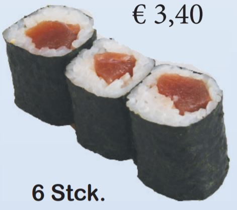
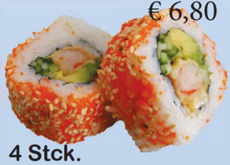
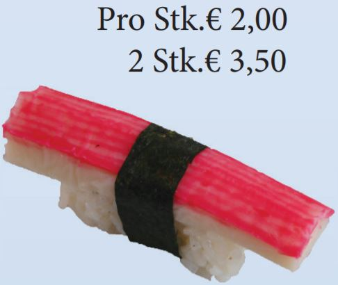
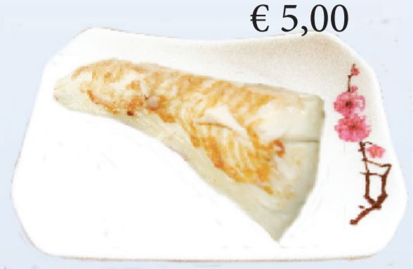
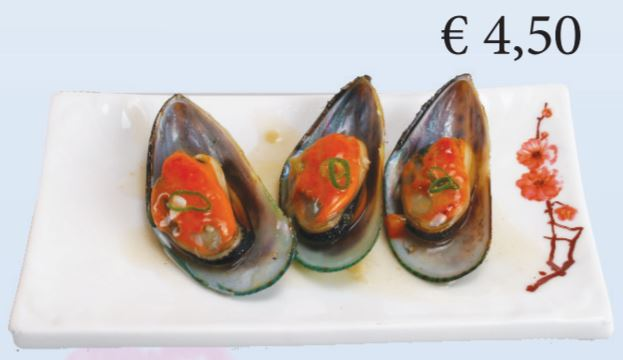
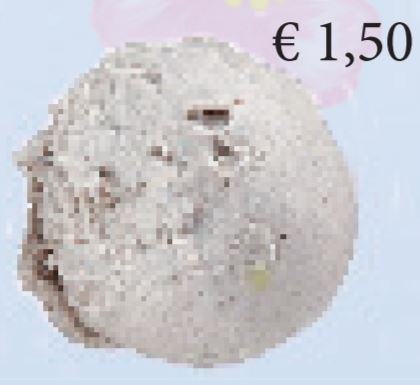

Speisekarte
Sushi
Vorspeisen
Beilagen
Hauptspeisen
Nachtisch
A1. Kappa-Maki (Gurken)
A2. Oschinko-Maki (eingelegter Rettich)
A3. Avokado-Maki
A4. Inari-Maki (Süßer Tofu)

A5. Tekka-Maki (Thunfisch)
A6. Sake-Maki (Lachs)

A7. Ebi-Maki (Garnelen)
A8. Unagi-Maki (Aal)
A9. Tamago-Maki

A10. Sake-Avokado-Maki (Lachs & Avokado)
A11. California-Maki (Surimi & Avokado)
A12. Tuna.Maki (Thunfischfilets)
A13. Lachs & Frischkäse-Maki
A14. Futo-Maki (Große Mix-Rolle)
A21. Inside-out Salat Roll
A22. Inside-out (Tobikko Roggen, Lachs, Gurken und Philadelphia-Käse)
A.23 Inside-out (Thunfisch, Gurken und Wasabi Tobikko Roggen mit scharfer Chilli Sauce)
A.24 Inside-out (Thunfisch, Gurken und Tobikko Roggen mit scharfer Chilli Sauce)
A.25 Inside-out Sake Roll

A26. Inside-out (Garnelen, Gurken, Avokado und Tobikko Roggen
A27. California Roll (Avokado und Surimi)

A28. Unagi Roll (Avokado & Aal)
A29. Tuna Roll (Thunfisch und Avokado)
A30. Torikara Chumaki (frittierte Hähnchenstreifen)
A51. Lachs Inside-out (Geröstete Zwiebeln)
A52. Rinder Hackfleisch Inside-out (gerösteten Zwiebeln)
A53. Lachs geräuchert (gerösteten Zwiebeln)
A54. Rinder-Rolle Inside-out
A31. Ebi Nigiri (Garnelen)
A32. Sake Nigiri (Lachs)
A33. Maguro Nigiri (Thunfisch)
A34. Unagi Nigiri (Aal)
A36. Saba Nigiri (Makrele)
A38. Tako Nigiri (Oktupus)
A39. Amaebi Nigiri (süße Grönland Garnelen)
A40. Tamago Nigiri (Japanisches Eier Omlett)

A41. Kani Nigiri (Surimi)
A42. Hokki Gai Nigiri (Hornmuscheln)
A43. Hotata Gai Nigiri (Jakobsmuschel)
A44. Ikura Nigiri (Fischrogen)

A45. Thunfisch Temaki
A46. Unagi (Aal) Temaki
A47. Lachs Temaki
A48. Surimi Temaki
1. Sakura Salat (Salat mit Seealgen, Surimi und Eieromlett)
2. Sashimi Salat (Salat mit rohem Fisch)
3. Chuka Ika Sansai (Pikanter Sepia-Seetangsalat)
4. Edamame Bohnen (junge Sojabohnen)
5. Kimuchi (Scharfer eingelegter Chinakohl)
6. Goma Wakame (Grüner Algensalat)
10. Peking Suppe (sauer-scharf)
11. Miso Suppe
12. Tako Yaki (Oktopusbällchen)
13. Gyoza (Maultaschen)
14. Agedashi Tofu
15. Inari
16. Mini Frühlingsrollen
17. Harumaki (Fleisch & Gemüsefüllung
18. Manduo (Japanisches gedämpftes und frittiertes Brot)
19. Japanischer Pfannkuchen
20. Lotuswurzel
21. Gemüse Tempura

22. Ebi Tempura (Garnelen in Teigmantel)
23. Mixed Tempura
24. gegrilltes Okra (Saison Gemüse)

25. gegrillte Süßkartoffeln
26. Gegrillte Zuchhini
27. Gegrillte Peperoni
28. Yaki Yasai (gegrilltes Gemüse)
29. Asuparabeekon (gegrillter Spargel im Baconmantel)
30. Yaki Mushrooms (gegrillte Champgnons)
61. Gohan (Weißer Reis)
62. Yaki Meshi (Gebratener Reis)
63. Yaki Soba (Gebratene Nudeln)
64. Yasai Men (Vegetarischen Udon Nudeln)
31. Schweinebauch vom Teppangrill

32. Lachs Tempura (frittierter Lachs mit Tempurateig)
33. Kräuterseitling Pilz
34. Tori no Karaage (Frittierte Hähnchenbrust)
35. Frittierte Hähncehnstreifen
36. Sake Yaki (Lachsfilet)
37. Hirame (gegrillter Heilbutt)
38. Tilapiafilet vom Teppangrill
39. Zanderfilet vom Teppangill
40. Ibodai Yaki (Butterfisch vom Teppangrill)

41. Fisch Teriyaki vom Teppangrill
42. Riesengarnelen vom Teppangrill
43. Garnelen Teriyaki vom Teppangrill
44. Ebi Kushi (Garnelenspieße)
45. Yaki Ika (Gegrillter Tintenfisch)

46. Grüne Muscheln vom Teppangrill
47. Teba Yaki (Frittierte Hähnchenflügel)
48. Ramu Kushi (Lammspieße)
49. Gyu Hireniku Kushi (Rinderfiletspieße)
50. Yakitori (Hähnchenspieße)
51. Ahiru no Karaage (Ente Teriyaki)
52. Kohitsuji (Lammkarree)
53. Rindfleisch mit schwarzem Pfeffer
54. Rindfleisch Teriyaki
71. Reis mit gegrilltem Aal
72. Reis mit gegilltem Lachs
73. Reis mit Hähncehn Teriyaki
74. Reis mit Rindfleisch Teriyaki
75. Reis mit Ebi Tempura
76. Gebackene Banane
77. Mochi mit heißen Schattenmorellen
100. Mango Eis
101. Schokolade
102. Vanille Eis
103. Stracciatella Eis
104. Rote Bohnen Eis
105. Grüner Tee Eis

106 Schwarzes Sesam Eis
107. Haselnuss Eis